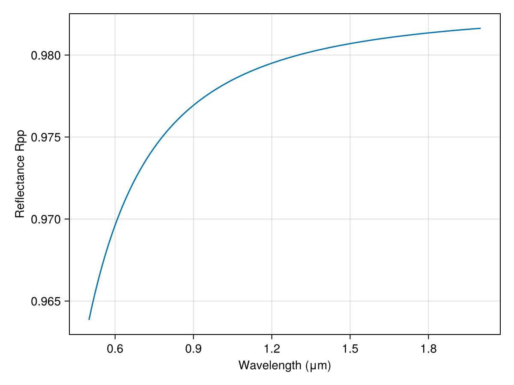
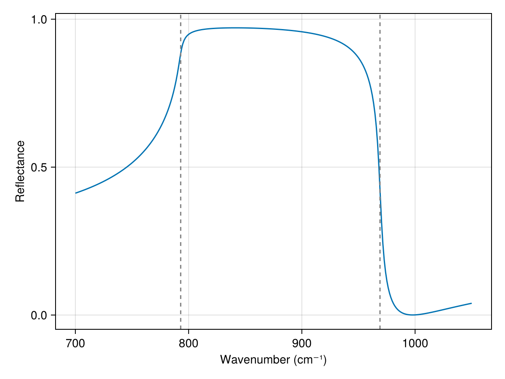

Built-in Dispersion Models
TransferMatrix.jl ships a few analytic dispersion models so you can build metal and phonon layers without hand-writing λ -> n closures or reaching for a materials database. Each helper returns a closure λ -> n (vacuum wavelength in μm, complex refractive index out) that drops straight into Layer.
Parameters are in eV by default. With using Unitful you may instead pass energies (u"eV"), wavenumbers (u"cm^-1"), or frequencies (u"Hz"); they are normalized to eV. The permittivity is evaluated in frequency space under the package's exp(-iωt) convention (so n″ > 0 denotes absorption):
\[ε(ω) = ε_\infty - \frac{ω_p^2}{ω^2 + iγ_D ω} + \sum_j \frac{Δε_j\, ω_{0j}^2}{ω_{0j}^2 - ω^2 - iγ_j ω}.\]
Gold (Drude metal, eV)
A Drude model captures gold's free-carrier response in the near-IR with just a plasma energy and a damping rate (ω_p ≈ 9.0 eV, γ ≈ 0.07 eV; representative near-IR Drude values (cf. Olmon et al., Phys. Rev. B 86, 235147 (2012))). For a model that also reproduces the visible-range interband edge, add Lorentz oscillators with drude_lorentz.
using TransferMatrix
using CairoMakie
au = drude(9.0, 0.07) # ω_p = 9.0 eV, γ = 0.07 eV
n_air = λ -> 1.0 + 0.0im
n_glass = λ -> 1.5 + 0.0im
λs = range(0.5, 2.0; length = 200) # μm
R = [transfer(λ, [Layer(n_air, 0.1), Layer(au, 0.05), Layer(n_glass, 0.5)]).Rpp
for λ in λs]
fig = Figure()
ax = Axis(fig[1, 1]; xlabel = "Wavelength (μm)", ylabel = "Reflectance Rpp")
lines!(ax, λs, R)
fig
Silicon carbide (single phonon, cm⁻¹)
Polar dielectrics show a reststrahlen band between the transverse (TO) and longitudinal (LO) optical phonons, where Re ε < 0 and reflectance approaches unity. The single-oscillator form ε(ω) = ε∞ (ω_LO² − ω² − iγω)/(ω_TO² − ω² − iγω) is reproduced by a Lorentz oscillator at ω_0 = ω_TO with Δε = ε∞ (ω_LO² − ω_TO²)/ω_TO² (it satisfies the Lyddane–Sachs–Teller relation ε(0) = ε∞ ω_LO²/ω_TO²).
using TransferMatrix
using Unitful
using CairoMakie
ε∞, ωTO, ωLO, γ = 6.5, 793.0, 969.0, 4.76 # cm⁻¹ (verify against source)
Δε = ε∞ * (ωLO^2 - ωTO^2) / ωTO^2
sic = lorentz(ωTO * u"cm^-1", Δε, γ * u"cm^-1"; ε_inf = ε∞)
k = range(700, 1050; length = 300) # cm⁻¹
λs = 1e4 ./ k # μm
R = [fresnel(0.0, 1.0, sic(λ))[1] for λ in λs]
fig = Figure()
ax = Axis(fig[1, 1]; xlabel = "Wavenumber (cm⁻¹)", ylabel = "Reflectance")
lines!(ax, k, R)
vlines!(ax, [ωTO, ωLO]; color = :gray, linestyle = :dash)
fig